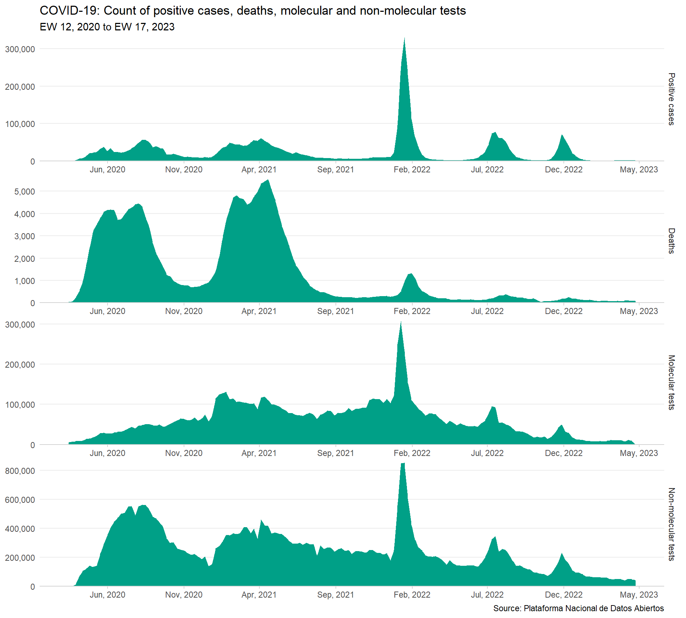
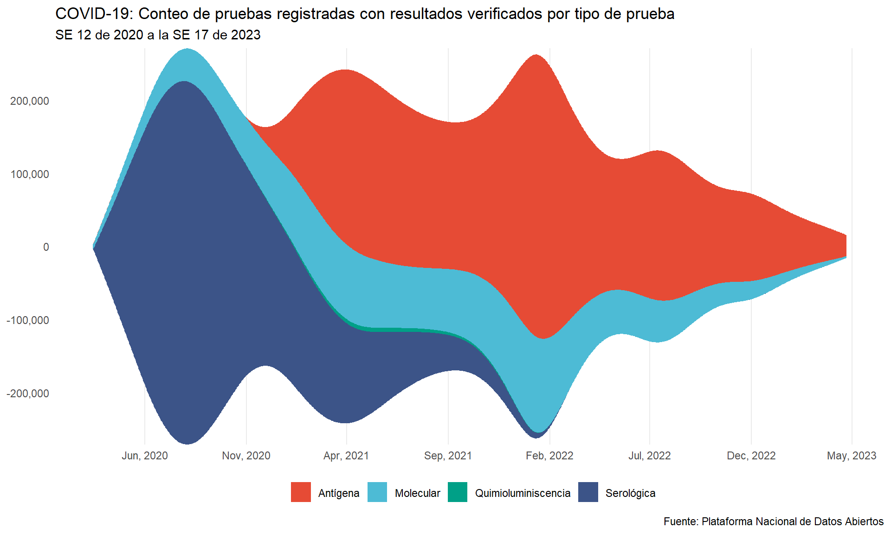

library(dplyr)
library(ggplot2)
library(ggstream)COVID-19 trends
Weekly counts plots
weekly_paths = fs::dir_ls("data/interim/weekly")
weekly_list = purrr::map(weekly_paths, \(x) readr::read_csv(x, col_types = "Di"))
weekly = purrr::reduce(weekly_list, \(x, y) inner_join(x, y, by = "week_start"))weekly_long = weekly |>
tidyr::pivot_longer(-week_start) |>
mutate(year_week = tsibble::yearweek(x = week_start, week_start = 7))facet_names = c(
"cases" = "Casos positivos", "deaths" = "Fallecimientos",
"m_tests" = "Pruebas moleculares", "nm_tests" = "Pruebas no moleculares"
)weekly_plot_base = ggplot(weekly_long, aes(week_start, value)) +
facet_wrap(
~name, ncol = 1, scales = "free", labeller = labeller(name = facet_names),
strip.position = "right"
) +
geom_area(fill = "#00A087FF")weekly_plot = weekly_plot_base +
scale_x_date(date_breaks = "5 months", date_labels = "%b, %Y") +
scale_y_continuous(labels = scales::label_comma(), expand = c(0, 0)) +
theme_minimal() +
theme(
axis.line.x = element_line(color = "lightgray"),
axis.ticks.x = element_line(color = "lightgray"),
panel.grid.major.x = element_blank(),
panel.grid.minor.x = element_blank(),
panel.grid.minor.y = element_blank()
) +
labs(
y = NULL, x = NULL,
title = "COVID-19: Conteo de casos positivos, fallecimientos, pruebas moleculares y no moleculares",
subtitle = "SE 12 de 2020 a la SE 17 de 2023",
caption = "Fuente: Plataforma Nacional de Datos Abiertos"
)weekly_plot
ggsave(weekly_plot, "figures/weekly-plot.png", width = 12, height = 6)Weekly counts by type of test plots
weekly_type_paths = fs::dir_ls("data/interim/weekly-type/")
weekly_type_list = purrr::map(
weekly_type_paths, \(x) readr::read_csv(x, col_types = "cDi")
)
names(weekly_type_list) = names(weekly_type_list) |>
fs::path_file() |>
fs::path_ext_remove()weekly_type = weekly_long |>
filter(name == "m_tests") |>
select(type = name, week_start, tests = value) |>
mutate(type = "Molecular") |>
bind_rows(weekly_type_list$`nm-tests-type`) |>
filter(
week_start >= as.Date(min(weekly_long$week_start)),
week_start <= as.Date(max(weekly_long$week_start))
) |>
arrange(type, week_start)weekly_type_plot_base = weekly_type |>
ggplot(aes(week_start, tests, fill = type)) +
geom_stream()weekly_type_plot = weekly_type_plot_base +
scale_x_date(date_breaks = "5 months", date_labels = "%b, %Y") +
scale_y_continuous(labels = scales::label_comma(), expand = c(0, 0)) +
ggsci::scale_fill_npg() +
theme_minimal() +
theme(
panel.grid.major.y = element_blank(),
panel.grid.minor.y = element_blank(),
panel.grid.minor.x = element_blank(),
legend.position = "bottom"
) +
labs(
y = NULL, x = NULL, fill = NULL,
title = "COVID-19: Conteo de pruebas registradas con resultados verificados por tipo de prueba",
subtitle = "SE 12 de 2020 a la SE 17 de 2023",
caption = "Fuente: Plataforma Nacional de Datos Abiertos"
)weekly_type_plot